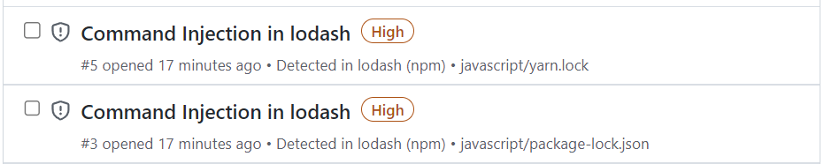
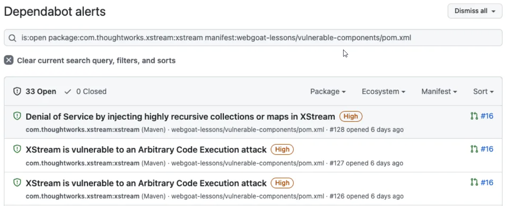

If the dependency information reported by GitHub is not what you expected, there are a number of points to consider, and various things you can check.
The results of dependency detection reported by GitHub may be different from the results returned by other tools. There are good reasons for this and it's helpful to understand how GitHub determines dependencies for your project.
GitHub generates and displays dependency data differently than other tools. Consequently, if you've been using another tool to identify dependencies you will almost certainly see different results. Consider the following:
GitHub Advisory Database is one of the data sources that GitHub uses to identify vulnerable dependencies and malware. It's a free, curated database of security advisories for common package ecosystems on GitHub. It includes both data reported directly to GitHub from GitHub Security Advisories, as well as official feeds and community sources. This data is reviewed and curated by GitHub to ensure that false or unactionable information is not shared with the development community. For more information, see Browsing security advisories in the GitHub Advisory Database.
The dependency graph parses all known package manifest files in a user’s repository. For example, for npm it will parse the package-lock.json file. It constructs a graph of all of the repository’s dependencies and public dependents. This happens when you enable the dependency graph and when anyone pushes to the default branch, and it includes commits that makes changes to a supported manifest format. For more information, see About the dependency graph and Troubleshooting the dependency graph.
Dependabot scans any push, to the default branch, that contains a manifest file. When a new advisory is added, it scans all existing repositories and generates an alert for each repository that is affected. Dependabot alerts are aggregated at the repository level, rather than creating one alert per advisory. For more information, see About Dependabot alerts.
Dependabot security updates are triggered when you receive an alert about a vulnerable dependency in your repository. Where possible, Dependabot creates a pull request in your repository to upgrade the vulnerable dependency to the minimum possible secure version needed to avoid the vulnerability. For more information, see About Dependabot security updates and Dependabot errors.
Dependabot doesn't scan repositories on a schedule, but rather when something changes. For example, a scan is triggered when a new dependency is added (GitHub checks for this on every push), or when a new advisory is added to the database. For more information, see About Dependabot alerts.
Dependabot alerts advise you about dependencies you should update, including transitive dependencies, where the version can be determined from a manifest or a lockfile. Dependabot security updates only suggest a change where Dependabot can directly "fix" the dependency, that is, when these are:
Check: Is the uncaught vulnerability for a component that's not specified in the repository's manifest or lockfile?
Dependabot alerts are supported for a set of ecosystems where we can provide high-quality, actionable data. Curated advisories in the GitHub Advisory Database, the dependency graph, Dependabot security updates, and Dependabot alerts are provided for several ecosystems, including Java’s Maven, JavaScript’s npm and Yarn, .NET’s NuGet, Python’s pip, Ruby's RubyGems, and PHP’s Composer. For an overview of the package ecosystems that we support for Dependabot alerts, see Dependency graph supported package ecosystems.
It's worth noting that security advisories may exist for other ecosystems. The information in an unreviewed security advisory is provided by the maintainers of a particular repository. This data is not curated by GitHub. For more information, see Browsing security advisories in the GitHub Advisory Database.
Check: Does the uncaught vulnerability apply to an unsupported ecosystem?
The GitHub Advisory Database was launched in November 2019, and initially back-filled to include advisories for security risks in the supported ecosystems, starting from 2017. When adding CVEs to the database, we prioritize curating newer CVEs, and CVEs affecting newer versions of software.
Some information on older vulnerabilities is available, especially where these CVEs are particularly widespread, however some old vulnerabilities are not included in the GitHub Advisory Database. If there's a specific old vulnerability that you need to be included in the database, contact us through the GitHub Support portal.
Check: Does the uncaught vulnerability have a publish date earlier than 2017 in the National Vulnerability Database?
Some third-party tools use uncurated CVE data that isn't checked or filtered by a human. This means that CVEs with tagging or severity errors, or other quality issues, will cause more frequent, more noisy, and less useful alerts.
Since Dependabot uses curated data in the GitHub Advisory Database, the volume of alerts may be lower, but the alerts you do receive will be accurate and relevant.
When a dependency has multiple vulnerabilities, an alert is generated for each vulnerability at the level of advisory plus manifest.

Legacy Dependabot alerts were grouped into a single aggregated alert with all the vulnerabilities for the same dependency. If you navigate to a link to a legacy Dependabot alert, you will be redirected to the Dependabot tab filtered to display vulnerabilities for that dependent package and manifest.

The Dependabot alerts count in GitHub shows a total for the number of alerts, which is the number of vulnerabilities, not the number of dependencies.
Check: If there is a discrepancy in the totals you are seeing, check that you are not comparing alert numbers with dependency numbers. Also check that you are viewing all alerts and not a subset of filtered alerts.
You can configure Dependabot to ignore specific dependencies in the configuration file, which will prevent security and version updates for those dependencies. If you only wish to use security updates, you will need to override the default behavior with a configuration file. For more information, see Configuring Dependabot security updates to prevent version updates from being activated. For information about ignoring dependencies, see Ignoring specific dependencies.
If your repository contains multiple GitHub Actions (for example, in a monorepo), the tag format you use affects how Dependabot detects and updates action versions.
-) separator (for example, @my-action-v0.1.0):
/) separator (for example, @my-action/v0.1.0):
Recommendation: For monorepos with multiple actions, use the name/version (slash) format for action tags. This ensures Dependabot can parse the tag hierarchy correctly and update actions independently.
Example:
# Recommended: namespaced with slash
uses: my-org/monorepo/my-action@my-action/v0.1.0
# Not recommended: dash
uses: my-org/monorepo@my-action-v0.1.0